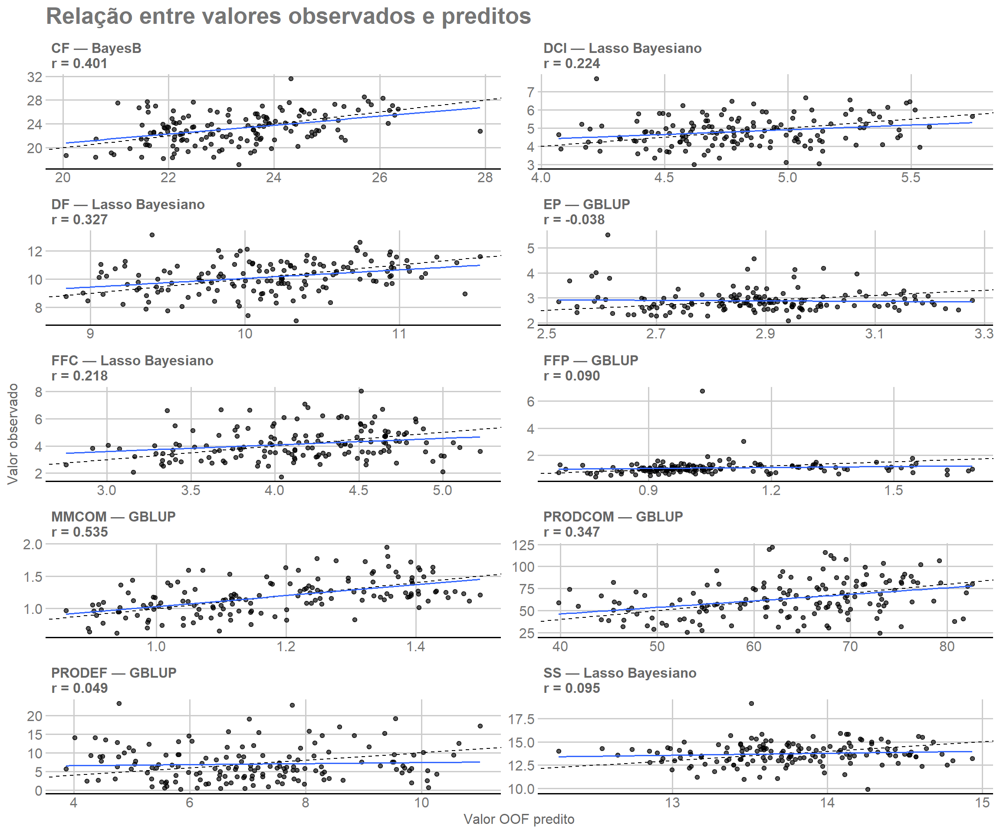
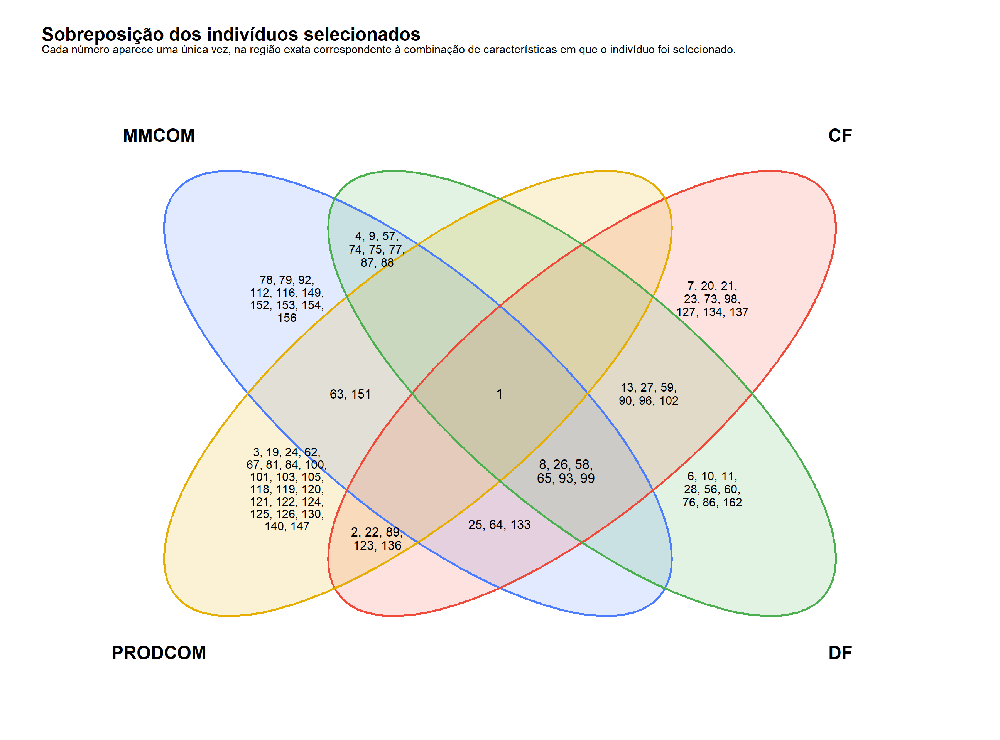

1. Objetivo
Este módulo reúne os resultados produzidos no Módulo 03 e os organiza em uma sequência de análise voltada à interpretação e à seleção genômica:
avaliar os diagnósticos de convergência → resumir as métricas de ajuste e desempenho preditivo → escolher o método por característica → interpretar os valores genômicos → examinar relações entre características → definir a elegibilidade → selecionar indivíduos → avaliar a recorrência.
A escolha do método é feita separadamente para cada característica e prioriza o desempenho preditivo OOF. O DIC permanece como informação complementar. Os diagnósticos MCMC são resumidos para avaliar o comportamento global das cadeias, mas não constituem um filtro de seleção.
Depois da escolha dos métodos, os GEBVs OOF são obtidos para todas as características e avaliados também em conjunto por meio de suas correlações. Somente após essa etapa são aplicados os critérios de elegibilidade para seleção genômica.
2. Preparação da análise
2.1 Pacotes e funções auxiliares
Os pacotes abaixo são usados para manipulação das tabelas, construção das figuras, formatação e definição de caminhos relativos ao projeto.
library(dplyr) # Agrupamento, junção e resumo de tabelas.
library(tidyr) # Reorganização entre formatos longo e largo.
library(ggplot2) # Construção de gráficos diagnósticos.
library(ggthemes) # Aplicação do tema e da escala GDocs.
library(knitr) # Formatação de tabelas em documentos R Markdown.
library(here) # Construção de caminhos relativos ao projeto.A função auxiliar abaixo padroniza a apresentação das tabelas no tutorial.
2.2 Objetos de entrada e configuração
O módulo utiliza matrices_object.rds, com fenótipos e
metadados, e models_object.rds, com métricas por fold,
predições OOF e diagnósticos MCMC. Os resultados são gravados somente ao
final da análise.
matrices_object <- readRDS(
here("output", "matrices", "matrices_object.rds")
)
models_object <- readRDS(
here("output", "models", "models_object.rds")
)
metrics <- models_object$metrics_by_fold
predictions <- models_object$predictions
convergence <- models_object$convergence_diagnostics
traits <- colnames(matrices_object$phenotypes)
methods <- models_object$settings$methods
OOF_R_MAGNITUDE_THRESHOLD <- 0.30
NRMSE_SELECTION_THRESHOLD <- 1.00
SELECTION_PROPORTION <- 0.20Os códigos internos dos métodos são mantidos nos objetos analíticos. Os rótulos e o tema definidos a seguir afetam apenas a apresentação.
method_labels <- c(
RRBLUP = "RR-BLUP/BRR",
BayesA = "BayesA",
BayesB = "BayesB",
BayesB2 = "BayesB2",
BayesC = "BayesC",
BL = "Lasso Bayesiano",
GBLUP = "GBLUP"
)
selection_objective_labels <- c(
increase = "Aumentar",
decrease = "Diminuir"
)
project_theme <- theme_gdocs() +
theme(
legend.position = "bottom",
legend.direction = "horizontal",
legend.box = "horizontal",
strip.text = element_text(face = "bold"),
plot.title = element_text(face = "bold")
)3. Diagnósticos MCMC e convergência
Antes de comparar o desempenho dos métodos, os diagnósticos MCMC são examinados para verificar se o comportamento das cadeias é compatível com convergência segundo os critérios monitorados.
3.1 Síntese global dos diagnósticos MCMC
Os diagnósticos calculados no Módulo 03 são resumidos globalmente. Um
ajuste é considerado sem sinalização quando nenhum dos parâmetros
monitorados recebeu Review_flag.
fit_convergence <- convergence |>
group_by(Run_id, Trait, Method) |>
summarise(
Diagnostic_flag = any(Review_flag, na.rm = TRUE),
.groups = "drop"
)
convergence_overview <- data.frame(
Nível = c("Ajustes", "Parâmetros monitorados"),
Total = c(nrow(fit_convergence), nrow(convergence)),
Sem_sinalização = c(
sum(!fit_convergence$Diagnostic_flag),
sum(!convergence$Review_flag, na.rm = TRUE)
)
) |>
mutate(
Proporção_sem_sinalização = Sem_sinalização / Total
)
tabela_html(
convergence_overview,
digits = 4,
caption = "Síntese global dos diagnósticos MCMC",
col.names = c("Nível", "Total", "Sem sinalização", "Proporção")
)| Nível | Total | Sem sinalização | Proporção |
|---|---|---|---|
| Ajustes | 350 | 314 | 0.8971 |
| Parâmetros monitorados | 700 | 658 | 0.9400 |
A predominância de ajustes e parâmetros sem sinalização indica que a maioria das cadeias apresentou comportamento compatível com convergência segundo os diagnósticos monitorados. Essa síntese não prova convergência de todos os efeitos de marcador individualmente e não participa da escolha do método.
A relação observado × predito complementa as métricas numéricas. A linha tracejada representa a relação 1:1 e a linha contínua corresponde à regressão dos valores observados sobre as predições OOF.
4. Desempenho dos modelos e escolha do método
4.1 Desempenho preditivo OOF
As estimativas OOF herdam o desenho de validação dos módulos anteriores. Cada indivíduo contribui com uma única predição OOF por método e característica. As métricas agrupadas descrevem o desempenho preditivo na população representada pelo conjunto de dados.
# Combina as predições OOF e calcula as métricas preditivas agregadas por característica e método.
pooled_metrics <- predictions |>
group_by(Trait, Method) |>
summarise(
N = n(),
r = cor(Observed, Predicted),
RMSE = sqrt(mean((Observed - Predicted)^2)),
MAE = mean(abs(Observed - Predicted)),
Bias = mean(Predicted - Observed),
Slope = cov(Observed, Predicted) / var(Predicted),
.groups = "drop"
) |>
mutate(
t_value = r * sqrt((N - 2) / (1 - r^2)),
p_value = 2 * pt(abs(t_value), df = N - 2, lower.tail = FALSE)
) |>
select(-t_value)
# Resume os resultados no objeto `fold_summary`.
fold_summary <- metrics |>
group_by(Trait, Method) |>
summarise(
Mean_DIC = mean(DIC),
SD_DIC = sd(DIC),
Mean_fold_r = mean(Correlation),
SD_fold_r = sd(Correlation),
Mean_fold_RMSE = mean(RMSE),
SD_fold_RMSE = sd(RMSE),
Mean_fold_MAE = mean(MAE),
SD_fold_MAE = sd(MAE),
.groups = "drop"
)A correlação de Pearson, o RMSE, o MAE, o viés e a inclinação são calculados com as 150 predições OOF. Os p-valores associados à correlação são mantidos somente como informação descritiva.
4.2 DIC e suporte relativo
Para complementar a avaliação preditiva, o DIC é resumido dentro de cada característica. Seguindo a lógica do estudo de referência (Silva et al. 2021):
\[ \Delta_j=\overline{DIC}_j-\min_k(\overline{DIC}_k), \]
\[ Wprob_j=\frac{\exp(-\Delta_j/2)}{\sum_k\exp(-\Delta_k/2)}, \qquad ER_j=\frac{Wprob_{\max}}{Wprob_j}. \]
Wprob representa suporte relativo derivado do DIC e não
é interpretado como probabilidade posterior calibrada de um modelo.
# Integra desempenho por fold e DIC para construir as medidas usadas na comparação dos métodos.
model_comparison <- pooled_metrics |>
left_join(fold_summary, by = c("Trait", "Method")) |>
group_by(Trait) |>
mutate(
Delta_DIC = Mean_DIC - min(Mean_DIC),
log_weight = -0.5 * Delta_DIC,
stable_weight = exp(log_weight - max(log_weight)),
Wprob = stable_weight / sum(stable_weight),
# Calcula a razão de evidência relativa ao método de maior Wprob em cada característica.
ER = max(Wprob) / Wprob
) |>
ungroup() |>
select(
Trait, Method, Mean_DIC, SD_DIC, Delta_DIC, Wprob, ER,
N, r, p_value, RMSE, MAE, Bias, Slope,
Mean_fold_r, SD_fold_r, Mean_fold_RMSE, SD_fold_RMSE,
Mean_fold_MAE, SD_fold_MAE
) |>
arrange(match(Trait, traits), Delta_DIC)4.3 Comparação integrada e escolha do método
Desempenho OOF e DIC respondem a perguntas diferentes. A correlação OOF é a principal referência para desempenho preditivo, enquanto DIC fornece informação complementar sobre ajuste e complexidade.
# Ordena os métodos e constrói o gráfico de correlação OOF por característica.
predictive_plot <- model_comparison |>
mutate(Method = factor(Method, levels = methods)) |>
ggplot(aes(x = Method, y = r, fill = Method)) +
geom_hline(yintercept = 0, linetype = 2, linewidth = 0.4) +
geom_hline(
yintercept = c(
-OOF_R_MAGNITUDE_THRESHOLD,
OOF_R_MAGNITUDE_THRESHOLD
),
linetype = 3,
linewidth = 0.5
) +
geom_col(width = 0.75) +
facet_wrap(~ Trait, scales = "fixed", ncol = 2) +
scale_fill_gdocs(
breaks = methods,
labels = method_labels
) +
scale_x_discrete(labels = method_labels) +
labs(
x = NULL,
y = "Correlação OOF",
fill = "Método",
title = "Capacidade preditiva dos sete métodos",
subtitle = paste0(
"Linhas pontilhadas indicam |r OOF| = ",
sprintf("%.2f", OOF_R_MAGNITUDE_THRESHOLD),
"; a elegibilidade exige magnitude superior a esse valor."
)
) +
project_theme +
guides(fill = guide_legend(nrow = 1, byrow = TRUE)) +
theme(
legend.direction = "horizontal",
legend.box = "horizontal",
axis.text.x = element_text(angle = 45, hjust = 1)
)
predictive_plot
A tabela conjunta permite comparar as duas fontes de evidência sem combiná-las em um único escore.
model_comparison_display <- model_comparison |>
mutate(Method_label = unname(method_labels[Method])) |>
transmute(
Trait,
Method,
Method_label,
DIC = sprintf("%.2f", Mean_DIC),
Delta_DIC = sprintf("%.2f", Delta_DIC),
Wprob = sprintf("%.3f", Wprob),
ER = sprintf("%.3f", ER),
r = sprintf("%.3f", r),
p_value = if_else(
p_value < 0.001,
"<0.001",
sprintf("%.3f", p_value)
)
) |>
arrange(match(Trait, traits), match(Method, methods))
tabela_html(
model_comparison_display |>
select(Trait, Method_label, DIC, Delta_DIC, Wprob, ER, r, p_value),
caption = "Comparação dos sete métodos por característica",
col.names = c("Característica", "Método", "DIC", "Delta DIC", "Wprob", "ER", "r", "p-valor")
)| Característica | Método | DIC | Delta DIC | Wprob | ER | r | p-valor |
|---|---|---|---|---|---|---|---|
| MMCOM | RR-BLUP/BRR | -19.28 | 0.48 | 0.182 | 1.270 | 0.526 | <0.001 |
| MMCOM | BayesA | -18.40 | 1.36 | 0.117 | 1.972 | 0.528 | <0.001 |
| MMCOM | BayesB | -17.65 | 2.11 | 0.081 | 2.866 | 0.530 | <0.001 |
| MMCOM | BayesB2 | -18.38 | 1.38 | 0.116 | 1.991 | 0.529 | <0.001 |
| MMCOM | BayesC | -18.47 | 1.28 | 0.122 | 1.899 | 0.529 | <0.001 |
| MMCOM | Lasso Bayesiano | -19.75 | 0.00 | 0.231 | 1.000 | 0.526 | <0.001 |
| MMCOM | GBLUP | -18.89 | 0.86 | 0.150 | 1.539 | 0.535 | <0.001 |
| PRODCOM | RR-BLUP/BRR | 1069.69 | 0.86 | 0.148 | 1.536 | 0.329 | <0.001 |
| PRODCOM | BayesA | 1070.03 | 1.20 | 0.125 | 1.823 | 0.336 | <0.001 |
| PRODCOM | BayesB | 1070.29 | 1.46 | 0.110 | 2.073 | 0.337 | <0.001 |
| PRODCOM | BayesB2 | 1070.05 | 1.22 | 0.124 | 1.839 | 0.338 | <0.001 |
| PRODCOM | BayesC | 1069.83 | 1.00 | 0.138 | 1.647 | 0.333 | <0.001 |
| PRODCOM | Lasso Bayesiano | 1069.98 | 1.15 | 0.128 | 1.775 | 0.314 | <0.001 |
| PRODCOM | GBLUP | 1068.83 | 0.00 | 0.227 | 1.000 | 0.347 | <0.001 |
| PRODEF | RR-BLUP/BRR | 714.34 | 0.89 | 0.138 | 1.557 | 0.042 | 0.606 |
| PRODEF | BayesA | 714.21 | 0.76 | 0.147 | 1.465 | 0.038 | 0.641 |
| PRODEF | BayesB | 714.52 | 1.07 | 0.126 | 1.703 | 0.044 | 0.593 |
| PRODEF | BayesB2 | 714.18 | 0.73 | 0.149 | 1.442 | 0.038 | 0.647 |
| PRODEF | BayesC | 714.45 | 0.99 | 0.131 | 1.644 | 0.046 | 0.572 |
| PRODEF | Lasso Bayesiano | 715.07 | 1.62 | 0.095 | 2.251 | 0.046 | 0.576 |
| PRODEF | GBLUP | 713.45 | 0.00 | 0.215 | 1.000 | 0.049 | 0.554 |
| CF | RR-BLUP/BRR | 557.47 | 1.23 | 0.119 | 1.850 | 0.386 | <0.001 |
| CF | BayesA | 557.77 | 1.53 | 0.102 | 2.151 | 0.391 | <0.001 |
| CF | BayesB | 556.88 | 0.63 | 0.160 | 1.372 | 0.401 | <0.001 |
| CF | BayesB2 | 557.74 | 1.50 | 0.104 | 2.114 | 0.391 | <0.001 |
| CF | BayesC | 556.62 | 0.37 | 0.182 | 1.205 | 0.397 | <0.001 |
| CF | Lasso Bayesiano | 556.24 | 0.00 | 0.220 | 1.000 | 0.389 | <0.001 |
| CF | GBLUP | 557.56 | 1.32 | 0.114 | 1.933 | 0.389 | <0.001 |
| DF | RR-BLUP/BRR | 348.39 | 0.35 | 0.164 | 1.192 | 0.321 | <0.001 |
| DF | BayesA | 349.09 | 1.05 | 0.115 | 1.694 | 0.319 | <0.001 |
| DF | BayesB | 349.39 | 1.35 | 0.099 | 1.967 | 0.324 | <0.001 |
| DF | BayesB2 | 349.08 | 1.05 | 0.116 | 1.687 | 0.318 | <0.001 |
| DF | BayesC | 348.57 | 0.53 | 0.150 | 1.307 | 0.326 | <0.001 |
| DF | Lasso Bayesiano | 348.03 | 0.00 | 0.195 | 1.000 | 0.327 | <0.001 |
| DF | GBLUP | 348.43 | 0.39 | 0.160 | 1.218 | 0.316 | <0.001 |
| DCI | RR-BLUP/BRR | 292.92 | 1.03 | 0.133 | 1.673 | 0.200 | 0.014 |
| DCI | BayesA | 293.54 | 1.65 | 0.098 | 2.283 | 0.193 | 0.018 |
| DCI | BayesB | 292.81 | 0.92 | 0.141 | 1.583 | 0.201 | 0.014 |
| DCI | BayesB2 | 293.53 | 1.65 | 0.098 | 2.278 | 0.194 | 0.017 |
| DCI | BayesC | 292.16 | 0.27 | 0.194 | 1.147 | 0.200 | 0.014 |
| DCI | Lasso Bayesiano | 291.89 | 0.00 | 0.223 | 1.000 | 0.224 | 0.006 |
| DCI | GBLUP | 293.24 | 1.35 | 0.113 | 1.964 | 0.158 | 0.054 |
| EP | RR-BLUP/BRR | 163.40 | 2.56 | 0.079 | 3.605 | -0.075 | 0.362 |
| EP | BayesA | 161.87 | 1.04 | 0.170 | 1.681 | -0.052 | 0.523 |
| EP | BayesB | 161.94 | 1.10 | 0.165 | 1.734 | -0.046 | 0.577 |
| EP | BayesB2 | 161.86 | 1.03 | 0.171 | 1.670 | -0.052 | 0.528 |
| EP | BayesC | 162.94 | 2.11 | 0.100 | 2.868 | -0.062 | 0.452 |
| EP | Lasso Bayesiano | 165.46 | 4.62 | 0.028 | 10.089 | -0.090 | 0.274 |
| EP | GBLUP | 160.84 | 0.00 | 0.286 | 1.000 | -0.038 | 0.645 |
| FFC | RR-BLUP/BRR | 376.66 | 0.79 | 0.133 | 1.481 | 0.210 | 0.010 |
| FFC | BayesA | 376.39 | 0.52 | 0.152 | 1.297 | 0.191 | 0.019 |
| FFC | BayesB | 376.62 | 0.74 | 0.136 | 1.450 | 0.186 | 0.023 |
| FFC | BayesB2 | 376.40 | 0.52 | 0.151 | 1.300 | 0.190 | 0.020 |
| FFC | BayesC | 376.74 | 0.86 | 0.128 | 1.538 | 0.200 | 0.014 |
| FFC | Lasso Bayesiano | 377.16 | 1.29 | 0.103 | 1.901 | 0.218 | 0.007 |
| FFC | GBLUP | 375.87 | 0.00 | 0.197 | 1.000 | 0.195 | 0.017 |
| FFP | RR-BLUP/BRR | 198.97 | 3.80 | 0.043 | 6.676 | 0.058 | 0.484 |
| FFP | BayesA | 195.86 | 0.69 | 0.202 | 1.409 | 0.086 | 0.293 |
| FFP | BayesB | 195.99 | 0.81 | 0.190 | 1.501 | 0.089 | 0.280 |
| FFP | BayesB2 | 195.82 | 0.65 | 0.206 | 1.383 | 0.087 | 0.290 |
| FFP | BayesC | 198.06 | 2.89 | 0.067 | 4.240 | 0.069 | 0.399 |
| FFP | Lasso Bayesiano | 202.46 | 7.28 | 0.007 | 38.143 | 0.032 | 0.701 |
| FFP | GBLUP | 195.17 | 0.00 | 0.285 | 1.000 | 0.090 | 0.273 |
| SS | RR-BLUP/BRR | 381.93 | 0.45 | 0.147 | 1.254 | 0.085 | 0.302 |
| SS | BayesA | 382.39 | 0.92 | 0.116 | 1.580 | 0.082 | 0.319 |
| SS | BayesB | 382.11 | 0.64 | 0.134 | 1.374 | 0.084 | 0.308 |
| SS | BayesB2 | 382.42 | 0.94 | 0.115 | 1.599 | 0.082 | 0.321 |
| SS | BayesC | 381.74 | 0.26 | 0.161 | 1.140 | 0.085 | 0.302 |
| SS | Lasso Bayesiano | 381.48 | 0.00 | 0.184 | 1.000 | 0.095 | 0.248 |
| SS | GBLUP | 381.99 | 0.51 | 0.143 | 1.289 | 0.067 | 0.414 |
A tabela mostra que correlação OOF e DIC fornecem informações complementares: um método pode apresentar melhor ajuste relativo por DIC sem ser o mais preditivo fora da amostra. Por isso, as métricas não são combinadas em um escore artificial; a correlação OOF define a prioridade preditiva e RMSE, MAE e DIC são usados na sequência de desempate estabelecida.
O método usado nas etapas seguintes é escolhido dentro de cada característica pela maior correlação OOF. Empates são resolvidos, nessa ordem, por menor RMSE, menor MAE e menor DIC médio.
trait_scale <- predictions |>
distinct(Trait, IND, Observed) |>
group_by(Trait) |>
summarise(
Phenotypic_mean = mean(Observed, na.rm = TRUE),
Phenotypic_SD = sd(Observed, na.rm = TRUE),
.groups = "drop"
)
selected_methods <- model_comparison |>
group_by(Trait) |>
arrange(desc(r), RMSE, MAE, Mean_DIC, .by_group = TRUE) |>
slice(1L) |>
ungroup() |>
transmute(
Trait,
Selected_method = Method,
r,
Abs_r = abs(r),
p_value,
RMSE,
MAE,
Bias,
Slope,
Mean_DIC,
Delta_DIC,
Wprob,
ER
) |>
left_join(trait_scale, by = "Trait") |>
arrange(desc(r), match(Trait, traits))
trait_order_by_prediction <- selected_methods$TraitA tabela abaixo resume o método escolhido para cada característica e as principais métricas utilizadas nessa escolha.
selected_methods_display <- selected_methods |>
mutate(Método = unname(method_labels[Selected_method])) |>
transmute(
Trait,
Método,
r = sprintf("%.3f", r),
Abs_r = sprintf("%.3f", Abs_r),
RMSE = sprintf("%.3f", RMSE),
MAE = sprintf("%.3f", MAE),
DIC = sprintf("%.2f", Mean_DIC)
)
tabela_html(
selected_methods_display,
caption = "Método escolhido para cada característica, ordenado pela correlação OOF",
col.names = c(
"Característica", "Método", "r OOF", "|r|",
"RMSE", "MAE", "DIC médio"
)
)| Característica | Método | r OOF | |r| | RMSE | MAE | DIC médio |
|---|---|---|---|---|---|---|
| MMCOM | GBLUP | 0.535 | 0.535 | 0.225 | 0.182 | -18.89 |
| CF | BayesB | 0.401 | 0.401 | 2.459 | 1.960 | 556.88 |
| PRODCOM | GBLUP | 0.347 | 0.347 | 20.283 | 16.026 | 1068.83 |
| DF | Lasso Bayesiano | 0.327 | 0.327 | 1.069 | 0.838 | 348.03 |
| DCI | Lasso Bayesiano | 0.224 | 0.224 | 0.810 | 0.633 | 291.89 |
| FFC | Lasso Bayesiano | 0.218 | 0.218 | 1.148 | 0.889 | 377.16 |
| SS | Lasso Bayesiano | 0.095 | 0.095 | 1.232 | 0.963 | 381.48 |
| FFP | GBLUP | 0.090 | 0.090 | 0.580 | 0.276 | 195.17 |
| PRODEF | GBLUP | 0.049 | 0.049 | 4.832 | 3.885 | 713.45 |
| EP | GBLUP | -0.038 | 0.038 | 0.495 | 0.330 | 160.84 |
A escolha é dependente da característica: GBLUP foi escolhido para
cinco características, Lasso Bayesiano para quatro e BayesB para uma.
MMCOM apresenta a maior magnitude de correlação OOF entre os métodos
escolhidos (r = 0,535). A heterogeneidade entre os métodos
selecionados confirma que não há um único método superior para todos os
caracteres.
4.4 Relação observado × predito
selected_predictions <- predictions |>
inner_join(
selected_methods |>
select(Trait, Selected_method, r),
by = "Trait"
) |>
filter(Method == Selected_method) |>
mutate(
Method_label = unname(method_labels[Method]),
Facet = paste0(
Trait, " — ", Method_label,
"\nr = ", sprintf("%.3f", r)
)
)
observed_predicted_plot <- selected_predictions |>
ggplot(aes(x = Predicted, y = Observed)) +
geom_abline(intercept = 0, slope = 1, linetype = 2, linewidth = 0.5) +
geom_point(alpha = 0.65, size = 1.6) +
geom_smooth(method = "lm", formula = y ~ x, se = FALSE, linewidth = 0.7) +
facet_wrap(~ Facet, scales = "free", ncol = 2) +
labs(
x = "Valor OOF predito",
y = "Valor observado",
title = "Relação entre valores observados e preditos"
) +
project_theme +
theme(legend.position = "none")
observed_predicted_plot
| Version | Author | Date |
|---|---|---|
| f151b7e | GitHub | 2026-09-08 |
A figura confirma visualmente a heterogeneidade das métricas: MMCOM apresenta a associação observado × predito mais nítida, enquanto características com correlação próxima de zero exibem nuvens mais dispersas. As linhas 1:1 e de regressão servem como referências de calibração e não alteram os critérios de seleção.
4.5 Análogo de herdabilidade baseado em marcadores e acurácia ajustada no RR-BLUP/BRR
Seguindo Silva et al. (Silva et al. 2021), o
RR-BLUP/BRR permite derivar um análogo de herdabilidade baseado na
variância dos marcadores. A acurácia ajustada por fold é calculada como
Correlation / sqrt(H2).
Essa razão é uma quantidade derivada e não uma correlação observada diretamente entre valor genético verdadeiro e predito. Por isso, pode ser negativa ou exceder 1.
# Calcula e organiza o resumo de herdabilidade baseado no modelo RR-BLUP/BRR.
rrblup_variance_components <- convergence |>
filter(
Method == "RRBLUP",
Parameter %in% c("Residual_variance", "Marker_variance")
) |>
select(Run_id, Trait, Fold, Method, Parameter, Posterior_mean) |>
pivot_wider(names_from = Parameter, values_from = Posterior_mean)
rrblup_fold_correlations <- metrics |>
filter(Method == "RRBLUP") |>
select(Trait, Fold, Correlation)
# Organiza a estrutura da validação cruzada e dos ajustes.
rrblup_heritability_by_fold <- rrblup_variance_components |>
left_join(rrblup_fold_correlations, by = c("Trait", "Fold")) |>
mutate(
Marker_variance_denominator = matrices_object$denominator,
Additive_variance = Marker_variance * Marker_variance_denominator,
H2 = Additive_variance / (Additive_variance + Residual_variance),
Predictive_accuracy = Correlation / sqrt(H2)
) |>
arrange(match(Trait, traits), Fold)
# Resume entre folds o análogo de herdabilidade e a acurácia ajustada do RR-BLUP/BRR.
rrblup_heritability_summary <- rrblup_heritability_by_fold |>
group_by(Trait) |>
summarise(
Mean_H2 = mean(H2),
SD_H2 = sd(H2),
Mean_fold_r = mean(Correlation),
SD_fold_r = sd(Correlation),
Mean_predictive_accuracy = mean(Predictive_accuracy),
SD_predictive_accuracy = sd(Predictive_accuracy),
.groups = "drop"
) |>
arrange(match(Trait, traits))O resumo por característica apresenta o análogo de herdabilidade e a acurácia ajustada entre folds.
rrblup_table <- rrblup_heritability_summary |>
transmute(
Trait,
RRBLUP_H2 = sprintf("%.3f", Mean_H2),
SD_RRBLUP_H2 = sprintf("%.3f", SD_H2),
RRBLUP_predictive_accuracy = sprintf("%.3f", Mean_predictive_accuracy),
SD_RRBLUP_predictive_accuracy = sprintf("%.3f", SD_predictive_accuracy)
)
tabela_html(
rrblup_table,
caption = "Análogo de herdabilidade baseado em marcadores e acurácia preditiva ajustada no RR-BLUP/BRR",
col.names = c("Característica", "RR-BLUP H2", "DP RR-BLUP H2", "Acurácia preditiva RR-BLUP", "DP da acurácia preditiva RR-BLUP")
)| Característica | RR-BLUP H2 | DP RR-BLUP H2 | Acurácia preditiva RR-BLUP | DP da acurácia preditiva RR-BLUP |
|---|---|---|---|---|
| MMCOM | 0.336 | 0.027 | 0.925 | 0.192 |
| PRODCOM | 0.266 | 0.007 | 0.651 | 0.135 |
| PRODEF | 0.253 | 0.034 | 0.234 | 0.305 |
| CF | 0.296 | 0.019 | 0.750 | 0.228 |
| DF | 0.293 | 0.018 | 0.647 | 0.294 |
| DCI | 0.276 | 0.020 | 0.455 | 0.312 |
| EP | 0.223 | 0.024 | 0.159 | 0.573 |
| FFC | 0.258 | 0.038 | 0.470 | 0.269 |
| FFP | 0.208 | 0.017 | 0.304 | 0.237 |
| SS | 0.271 | 0.023 | 0.202 | 0.205 |
A tabela mostra que o análogo de herdabilidade e a acurácia ajustada
variam entre características, refletindo diferenças na contribuição
relativa do componente genômico e na capacidade preditiva entre folds. A
acurácia ajustada deve ser interpretada como razão derivada de
Correlation / sqrt(H2), e não como uma correlação observada
diretamente com o valor genético verdadeiro; por isso, valores negativos
ou superiores a 1 não devem ser lidos como correlações
convencionais.
5. Valores genômicos OOF e relações entre características
5.1 GEBVs OOF na escala da característica
Para cada característica, o componente genômico provém do método escolhido e continua sendo cross-fitted: o fenótipo do próprio indivíduo não participou do ajuste que gerou seu escore OOF.
Também é apresentada uma versão na unidade original da característica:
\[ GEBV_{escala} = \bar{y} + GEBV_{centrado}. \]
A soma da média fenotípica apenas desloca a escala. Ela não altera o ranking e não transforma o GEBV em uma predição fenotípica completa.
oof_genomic_values <- predictions |>
inner_join(
selected_methods |>
select(
Trait, Selected_method, r, p_value
),
by = "Trait"
) |>
filter(Method == Selected_method) |>
left_join(trait_scale, by = "Trait") |>
transmute(
IND,
Trait,
Fold,
Method,
Observed,
Predicted,
OOF_r = r,
OOF_p_value = p_value,
Phenotypic_mean,
GEBV_centered = Genomic_component,
GEBV_on_trait_scale = Phenotypic_mean + Genomic_component
) |>
arrange(match(Trait, traits), IND)5.2 Correlação entre GEBVs OOF das dez características
Antes de aplicar qualquer filtro de elegibilidade, os GEBVs OOF dos métodos escolhidos são organizados para todas as dez características. A matriz abaixo descreve a associação entre esses escores cross-fitted.
oof_genomic_wide <- oof_genomic_values |>
select(IND, Trait, GEBV_centered) |>
pivot_wider(names_from = Trait, values_from = GEBV_centered)
oof_genomic_correlations <- cor(
as.matrix(
oof_genomic_wide[, trait_order_by_prediction, drop = FALSE]
)
)Essas correlações não são estimativas de correlação genética de um modelo multivariado. Elas descrevem apenas a associação entre os GEBVs OOF produzidos separadamente para cada característica.
# Reorganiza a matriz de correlações OOF e constrói o mapa de calor entre características.
correlation_long <- as.data.frame(
as.table(oof_genomic_correlations)
)
names(correlation_long) <- c(
"Trait_1",
"Trait_2",
"Correlation"
)
# Zera somente o rótulo de |r| < 0,005; a correlação original continua sendo usada na análise e na cor.
correlation_long <- correlation_long |>
mutate(
Trait_1 = factor(
Trait_1,
levels = trait_order_by_prediction
),
Trait_2 = factor(
Trait_2,
levels = rev(trait_order_by_prediction)
),
Correlation_label = replace(
Correlation,
abs(Correlation) < 0.005,
0
)
)
# Constrói o mapa de calor das correlações entre valores genômicos OOF.
correlation_plot <- ggplot(
correlation_long,
aes(x = Trait_1, y = Trait_2, fill = Correlation)
) +
geom_tile() +
geom_text(
aes(label = sprintf("%.2f", Correlation_label)),
size = 3
) +
scale_fill_distiller(
type = "div",
palette = "RdBu",
direction = 1,
limits = c(-1, 1)
) +
labs(
x = NULL,
y = NULL,
fill = "r",
title = "Correlação entre GEBVs OOF das dez características"
) +
coord_equal() +
project_theme +
theme(axis.text.x = element_text(angle = 45, hjust = 1))
correlation_plot
A matriz é descritiva: valores positivos indicam tendência de ordenamento semelhante dos indivíduos entre características, enquanto valores negativos indicam tendências opostas. Ela não define limiar de elegibilidade e não representa uma correlação genética estimada por modelo multivariado.
6. Seleção genômica nas características elegíveis
6.1 Critérios de elegibilidade
A seleção é realizada somente quando o método escolhido para a característica satisfaz simultaneamente:
\[ |r_{OOF}| > 0{,}30 \]
e
\[ NRMSE = \frac{RMSE}{s_y} < 1, \]
em que \(s_y\) é o desvio-padrão fenotípico observado. O primeiro critério usa a magnitude da correlação OOF observado × predito. O sinal de \(r\) permanece disponível para interpretação; valores negativos de grande magnitude representam ordenamento invertido e devem ser discutidos explicitamente, embora o limiar de elegibilidade seja aplicado a \(|r|\).
selection_objective_map <- c(
MMCOM = "increase",
PRODCOM = "increase",
PRODEF = "decrease",
CF = "increase",
DF = "increase",
DCI = "decrease",
EP = "increase",
FFC = "increase",
FFP = "increase",
SS = "increase"
)
selection_objectives <- data.frame(
Trait = traits,
Selection_objective = unname(selection_objective_map[traits]),
stringsAsFactors = FALSE
)
model_selection <- selected_methods |>
left_join(selection_objectives, by = "Trait") |>
mutate(
NRMSE = RMSE / Phenotypic_SD,
Predictive_skill_vs_SD = 1 - NRMSE,
Correlation_direction = if_else(r >= 0, "positive", "negative"),
Eligible_by_correlation =
Abs_r > OOF_R_MAGNITUDE_THRESHOLD,
Eligible_by_error =
NRMSE < NRMSE_SELECTION_THRESHOLD,
Selection_eligible =
Eligible_by_correlation & Eligible_by_error,
Eligibility_reason = case_when(
Selection_eligible ~ "eligible",
!Eligible_by_correlation & !Eligible_by_error ~
"fails_correlation_and_error",
!Eligible_by_correlation ~ "fails_correlation",
!Eligible_by_error ~ "fails_error",
TRUE ~ "review"
)
) |>
arrange(desc(Abs_r), NRMSE, match(Trait, traits))
eligible_traits <- model_selection |>
filter(Selection_eligible) |>
pull(Trait)
selection_parameters <- data.frame(
Parâmetro = c(
"Escolha do método",
"Magnitude mínima da correlação OOF",
"NRMSE máximo",
"Proporção selecionada"
),
Regra = c(
"Maior r; desempates por menor RMSE, menor MAE e menor DIC",
"|r| > 0,30",
"< 1,00",
"20% por característica elegível"
),
stringsAsFactors = FALSE
)
tabela_html(
selection_parameters,
caption = "Critérios usados na escolha do método e na seleção genômica",
col.names = c("Parâmetro", "Regra")
)| Parâmetro | Regra |
|---|---|
| Escolha do método | Maior r; desempates por menor RMSE, menor MAE e menor DIC |
| Magnitude mínima da correlação OOF | |r| > 0,30 |
| NRMSE máximo | < 1,00 |
| Proporção selecionada | 20% por característica elegível |
O limiar de elegibilidade é aplicado à magnitude da correlação
preditiva OOF: \(|r_{OOF}| >
0{,}30\). A decisão é apresentada do maior para o menor
|r|. A matriz de correlações entre GEBVs OOF das dez
características permanece exclusivamente descritiva e não usa esse
limiar.
6.2 Características elegíveis e justificativa
eligibility_reason_labels <- c(
eligible = "Selecionada: |r| > 0,30 e NRMSE < 1",
fails_correlation = "Não selecionada: |r| <= 0,30",
fails_error = "Não selecionada: NRMSE >= 1",
fails_correlation_and_error =
"Não selecionada: |r| <= 0,30 e NRMSE >= 1",
review = "Revisar"
)
correlation_direction_labels <- c(
positive = "Positiva",
negative = "Negativa"
)
model_selection_display <- model_selection |>
mutate(
Método = unname(method_labels[Selected_method]),
Objetivo = unname(selection_objective_labels[Selection_objective]),
Direção = unname(
correlation_direction_labels[Correlation_direction]
),
Elegível = if_else(Selection_eligible, "Sim", "Não"),
Justificativa = unname(
eligibility_reason_labels[Eligibility_reason]
)
) |>
transmute(
Trait,
Método,
Objetivo,
r = sprintf("%.3f", r),
Abs_r = sprintf("%.3f", Abs_r),
Direção,
NRMSE = sprintf("%.3f", NRMSE),
Elegível,
Justificativa
)
tabela_html(
model_selection_display,
caption = "Elegibilidade para seleção genômica, ordenada pela magnitude da correlação OOF",
col.names = c(
"Característica", "Método", "Objetivo", "r", "|r|",
"Direção", "NRMSE", "Elegível", "Justificativa"
)
)| Característica | Método | Objetivo | r | |r| | Direção | NRMSE | Elegível | Justificativa |
|---|---|---|---|---|---|---|---|---|
| MMCOM | GBLUP | Aumentar | 0.535 | 0.535 | Positiva | 0.848 | Sim | Selecionada: |r| > 0,30 e NRMSE < 1 |
| CF | BayesB | Aumentar | 0.401 | 0.401 | Positiva | 0.922 | Sim | Selecionada: |r| > 0,30 e NRMSE < 1 |
| PRODCOM | GBLUP | Aumentar | 0.347 | 0.347 | Positiva | 0.943 | Sim | Selecionada: |r| > 0,30 e NRMSE < 1 |
| DF | Lasso Bayesiano | Aumentar | 0.327 | 0.327 | Positiva | 0.965 | Sim | Selecionada: |r| > 0,30 e NRMSE < 1 |
| DCI | Lasso Bayesiano | Diminuir | 0.224 | 0.224 | Positiva | 0.994 | Não | Não selecionada: |r| <= 0,30 |
| FFC | Lasso Bayesiano | Aumentar | 0.218 | 0.218 | Positiva | 1.000 | Não | Não selecionada: |r| <= 0,30 e NRMSE >= 1 |
| SS | Lasso Bayesiano | Aumentar | 0.095 | 0.095 | Positiva | 1.052 | Não | Não selecionada: |r| <= 0,30 e NRMSE >= 1 |
| FFP | GBLUP | Aumentar | 0.090 | 0.090 | Positiva | 1.034 | Não | Não selecionada: |r| <= 0,30 e NRMSE >= 1 |
| PRODEF | GBLUP | Diminuir | 0.049 | 0.049 | Positiva | 1.042 | Não | Não selecionada: |r| <= 0,30 e NRMSE >= 1 |
| EP | GBLUP | Aumentar | -0.038 | 0.038 | Negativa | 1.073 | Não | Não selecionada: |r| <= 0,30 e NRMSE >= 1 |
Com \(|r| > 0{,}30\) e
NRMSE < 1, permanecem elegíveis MMCOM,
CF, PRODCOM e DF. DCI
falha apenas no critério de magnitude da correlação preditiva. FFC, SS,
FFP, PRODEF e EP apresentam |r| <= 0,30 e também
NRMSE >= 1 nos valores não arredondados. A tabela
explicita separadamente magnitude, sinal, erro e motivo da decisão.
6.3 Ranking e indivíduos selecionados
Nas características elegíveis, os indivíduos são ordenados pelo GEBV na escala da característica respeitando a direção de melhoramento. Para características cujo objetivo é reduzir, o sinal é invertido somente para construir o escore de ordenação. A proporção selecionada é de 20%.
selection_genomic_values <- oof_genomic_values |>
inner_join(
model_selection |>
select(
Trait,
Selection_objective,
Selection_eligible,
NRMSE
),
by = "Trait"
) |>
mutate(OOF_NRMSE = NRMSE)
genomic_ranking <- selection_genomic_values |>
filter(Selection_eligible) |>
mutate(
Selection_score = case_when(
Selection_objective == "increase" ~ GEBV_on_trait_scale,
Selection_objective == "decrease" ~ -GEBV_on_trait_scale,
TRUE ~ NA_real_
)
) |>
group_by(Trait) |>
arrange(desc(Selection_score), IND, .by_group = TRUE) |>
mutate(Rank = row_number()) |>
ungroup() |>
arrange(match(Trait, eligible_traits), Rank)
selection_sizes <- genomic_ranking |>
count(Trait, name = "N_available") |>
mutate(
Selection_proportion = SELECTION_PROPORTION,
N_selected = pmax(
1L,
as.integer(ceiling(Selection_proportion * N_available))
)
) |>
arrange(match(Trait, traits))
selected_individuals_by_trait <- genomic_ranking |>
inner_join(selection_sizes, by = "Trait") |>
filter(Rank <= N_selected) |>
left_join(
matrices_object$metadata |>
select(IND, FAM),
by = "IND"
) |>
select(
Trait, Rank, IND, FAM, Method, Selection_objective,
GEBV_centered, GEBV_on_trait_scale, Selection_score,
OOF_r, OOF_NRMSE, Selection_proportion,
N_available, N_selected
) |>
arrange(match(Trait, eligible_traits), Rank)A tabela apresenta os cinco primeiros indivíduos de cada característica elegível; o objeto completo mantém todos os indivíduos selecionados.
selection_preview <- selected_individuals_by_trait |>
group_by(Trait) |>
slice_head(n = 5) |>
ungroup() |>
mutate(
Método = unname(method_labels[Method]),
Objetivo = unname(selection_objective_labels[Selection_objective])
) |>
transmute(
Trait,
Rank,
IND,
FAM,
Método,
Objetivo,
GEBV = sprintf("%.3f", GEBV_on_trait_scale),
r = sprintf("%.3f", OOF_r),
NRMSE = sprintf("%.3f", OOF_NRMSE)
)
tabela_html(
selection_preview,
caption = "Cinco primeiros indivíduos selecionados por característica elegível",
col.names = c(
"Característica", "Rank", "IND", "FAM", "Método", "Objetivo",
"GEBV + média", "r OOF", "NRMSE"
)
)| Característica | Rank | IND | FAM | Método | Objetivo | GEBV + média | r OOF | NRMSE |
|---|---|---|---|---|---|---|---|---|
| CF | 1 | 26 | 5 | BayesB | Aumentar | 25.425 | 0.401 | 0.922 |
| CF | 2 | 102 | 10 | BayesB | Aumentar | 25.270 | 0.401 | 0.922 |
| CF | 3 | 27 | 5 | BayesB | Aumentar | 25.223 | 0.401 | 0.922 |
| CF | 4 | 65 | 8 | BayesB | Aumentar | 25.204 | 0.401 | 0.922 |
| CF | 5 | 93 | 10 | BayesB | Aumentar | 25.187 | 0.401 | 0.922 |
| DF | 1 | 13 | 1 | Lasso Bayesiano | Aumentar | 11.412 | 0.327 | 0.965 |
| DF | 2 | 4 | 1 | Lasso Bayesiano | Aumentar | 11.058 | 0.327 | 0.965 |
| DF | 3 | 102 | 10 | Lasso Bayesiano | Aumentar | 11.007 | 0.327 | 0.965 |
| DF | 4 | 27 | 5 | Lasso Bayesiano | Aumentar | 10.902 | 0.327 | 0.965 |
| DF | 5 | 77 | 9 | Lasso Bayesiano | Aumentar | 10.889 | 0.327 | 0.965 |
| MMCOM | 1 | 149 | 7 | GBLUP | Aumentar | 1.332 | 0.535 | 0.848 |
| MMCOM | 2 | 152 | 7 | GBLUP | Aumentar | 1.285 | 0.535 | 0.848 |
| MMCOM | 3 | 93 | 10 | GBLUP | Aumentar | 1.279 | 0.535 | 0.848 |
| MMCOM | 4 | 77 | 9 | GBLUP | Aumentar | 1.275 | 0.535 | 0.848 |
| MMCOM | 5 | 4 | 1 | GBLUP | Aumentar | 1.270 | 0.535 | 0.848 |
| PRODCOM | 1 | 119 | 4 | GBLUP | Aumentar | 74.248 | 0.347 | 0.943 |
| PRODCOM | 2 | 130 | 4 | GBLUP | Aumentar | 72.216 | 0.347 | 0.943 |
| PRODCOM | 3 | 105 | 2 | GBLUP | Aumentar | 71.947 | 0.347 | 0.943 |
| PRODCOM | 4 | 120 | 4 | GBLUP | Aumentar | 70.864 | 0.347 | 0.943 |
| PRODCOM | 5 | 24 | 5 | GBLUP | Aumentar | 70.607 | 0.347 | 0.943 |
Cada característica elegível possui 150 indivíduos disponíveis e, com
intensidade de seleção de 20%, são retidos 30 indivíduos por
característica. A tabela mostra apenas os cinco primeiros para
manter a leitura compacta; a seleção completa permanece em
selected_individuals_by_trait. Como o objetivo de
melhoramento entra no Selection_score, ranks menores
correspondem sempre à direção desejada para cada característica.
6.4 Recorrência e sobreposição entre características elegíveis
A recorrência conta em quantas características elegíveis cada indivíduo aparece entre os 20% selecionados. A frequência é calculada em relação ao número de características elegíveis e não constitui um índice multicaracterístico.
recurrence_counts <- selected_individuals_by_trait |>
group_by(IND, FAM) |>
summarise(
N_traits = n(),
Traits = paste(Trait, collapse = ", "),
Best_rank = min(Rank),
Mean_rank_present = mean(Rank),
.groups = "drop"
)
n_eligible_traits <- length(eligible_traits)
multitrait_recurrence <- matrices_object$metadata |>
select(IND, FAM) |>
left_join(recurrence_counts, by = c("IND", "FAM")) |>
mutate(
N_traits = tidyr::replace_na(N_traits, 0L),
Traits = tidyr::replace_na(Traits, ""),
Best_rank = if_else(N_traits == 0L, NA_integer_, Best_rank),
Mean_rank_present = if_else(
N_traits == 0L,
NA_real_,
Mean_rank_present
),
Selection_frequency = if (n_eligible_traits > 0) {
N_traits / n_eligible_traits
} else {
0
},
Recurrence_class = case_when(
N_traits >= 4L ~ "high_4plus",
N_traits == 3L ~ "intermediate_3",
N_traits == 2L ~ "broad_2",
N_traits == 1L ~ "specific_1",
TRUE ~ "none_0"
)
) |>
arrange(desc(N_traits), FAM, IND)
recurrence_distribution <- multitrait_recurrence |>
count(N_traits, Recurrence_class, name = "N_individuals") |>
mutate(
Proportion_of_population =
N_individuals / nrow(matrices_object$metadata)
) |>
arrange(desc(N_traits))
multitrait_candidates <- multitrait_recurrence |>
filter(N_traits >= 2L) |>
arrange(desc(N_traits), FAM, IND)A distribuição resume quantos indivíduos foram selecionados em zero, uma, duas, três ou mais características.
recurrence_class_labels <- c(
high_4plus = "Alta (>=4)",
intermediate_3 = "Intermediária (3)",
broad_2 = "Ampla (2)",
specific_1 = "Específica (1)",
none_0 = "Nenhuma (0)"
)
recurrence_distribution_display <- recurrence_distribution |>
mutate(
Classe = unname(recurrence_class_labels[Recurrence_class])
) |>
transmute(
N_traits,
Classe,
N_individuals,
Proportion_of_population = sprintf("%.3f", Proportion_of_population)
)
tabela_html(
recurrence_distribution_display,
caption = "Distribuição dos indivíduos segundo a recorrência nas características elegíveis",
col.names = c(
"Número de características", "Classe", "Indivíduos",
"Proporção da população"
)
)| Número de características | Classe | Indivíduos | Proporção da população |
|---|---|---|---|
| 4 | Alta (>=4) | 1 | 0.007 |
| 3 | Intermediária (3) | 6 | 0.040 |
| 2 | Ampla (2) | 24 | 0.160 |
| 1 | Específica (1) | 50 | 0.333 |
| 0 | Nenhuma (0) | 69 | 0.460 |
A recorrência mostra que a seleção não é redundante entre características: 69 indivíduos não aparecem em nenhuma lista, 50 aparecem em apenas uma, 24 em duas, 6 em três e 1 nas quatro características elegíveis. As 120 ocorrências totais de seleção concentram, portanto, parte importante da sobreposição em um subconjunto menor da população.
Os indivíduos selecionados em pelo menos duas características são apresentados em uma tabela única.
recurrent_candidates_display <- multitrait_candidates |>
mutate(
Classe = unname(recurrence_class_labels[Recurrence_class])
) |>
transmute(
IND,
FAM,
N_traits,
Selection_frequency = sprintf("%.3f", Selection_frequency),
Classe,
Traits,
Best_rank,
Mean_rank_present = sprintf("%.2f", Mean_rank_present)
)
tabela_html(
recurrent_candidates_display,
caption = "Indivíduos recorrentes em pelo menos duas características elegíveis",
col.names = c(
"IND", "FAM", "Número de características", "Frequência",
"Classe", "Características", "Melhor rank", "Rank médio"
)
)| IND | FAM | Número de características | Frequência | Classe | Características | Melhor rank | Rank médio |
|---|---|---|---|---|---|---|---|
| 1 | 1 | 4 | 1.000 | Alta (>=4) | MMCOM, CF, PRODCOM, DF | 8 | 15.75 |
| 8 | 1 | 3 | 0.750 | Intermediária (3) | MMCOM, CF, DF | 22 | 23.33 |
| 26 | 5 | 3 | 0.750 | Intermediária (3) | MMCOM, CF, DF | 1 | 12.67 |
| 58 | 8 | 3 | 0.750 | Intermediária (3) | MMCOM, CF, DF | 9 | 13.67 |
| 65 | 8 | 3 | 0.750 | Intermediária (3) | MMCOM, CF, DF | 4 | 7.33 |
| 93 | 10 | 3 | 0.750 | Intermediária (3) | MMCOM, CF, DF | 3 | 6.33 |
| 99 | 10 | 3 | 0.750 | Intermediária (3) | MMCOM, CF, DF | 14 | 16.67 |
| 13 | 1 | 2 | 0.500 | Ampla (2) | CF, DF | 1 | 4.50 |
| 2 | 1 | 2 | 0.500 | Ampla (2) | CF, PRODCOM | 20 | 20.50 |
| 4 | 1 | 2 | 0.500 | Ampla (2) | MMCOM, DF | 2 | 3.50 |
| 9 | 1 | 2 | 0.500 | Ampla (2) | MMCOM, DF | 8 | 15.50 |
| 123 | 4 | 2 | 0.500 | Ampla (2) | CF, PRODCOM | 21 | 25.50 |
| 22 | 5 | 2 | 0.500 | Ampla (2) | CF, PRODCOM | 19 | 19.50 |
| 25 | 5 | 2 | 0.500 | Ampla (2) | MMCOM, CF | 17 | 21.50 |
| 27 | 5 | 2 | 0.500 | Ampla (2) | CF, DF | 3 | 3.50 |
| 133 | 6 | 2 | 0.500 | Ampla (2) | MMCOM, CF | 14 | 22.00 |
| 136 | 6 | 2 | 0.500 | Ampla (2) | CF, PRODCOM | 19 | 21.00 |
| 151 | 7 | 2 | 0.500 | Ampla (2) | MMCOM, PRODCOM | 12 | 17.00 |
| 57 | 8 | 2 | 0.500 | Ampla (2) | MMCOM, DF | 7 | 13.00 |
| 59 | 8 | 2 | 0.500 | Ampla (2) | CF, DF | 19 | 23.50 |
| 63 | 8 | 2 | 0.500 | Ampla (2) | MMCOM, PRODCOM | 8 | 9.00 |
| 64 | 8 | 2 | 0.500 | Ampla (2) | MMCOM, CF | 15 | 18.00 |
| 74 | 9 | 2 | 0.500 | Ampla (2) | MMCOM, DF | 7 | 8.00 |
| 75 | 9 | 2 | 0.500 | Ampla (2) | MMCOM, DF | 27 | 27.50 |
| 77 | 9 | 2 | 0.500 | Ampla (2) | MMCOM, DF | 4 | 4.50 |
| 87 | 9 | 2 | 0.500 | Ampla (2) | MMCOM, DF | 15 | 18.50 |
| 102 | 10 | 2 | 0.500 | Ampla (2) | CF, DF | 2 | 2.50 |
| 88 | 10 | 2 | 0.500 | Ampla (2) | MMCOM, DF | 6 | 18.00 |
| 89 | 10 | 2 | 0.500 | Ampla (2) | CF, PRODCOM | 16 | 20.50 |
| 90 | 10 | 2 | 0.500 | Ampla (2) | CF, DF | 15 | 22.00 |
| 96 | 10 | 2 | 0.500 | Ampla (2) | CF, DF | 6 | 16.00 |
Ao todo, 31 indivíduos são recorrentes em pelo menos duas características. Eles combinam desempenho favorável em mais de um caráter, mas a recorrência não constitui índice multicaracterístico: ela resume somente a coincidência entre listas de seleção independentes.
A tabela de interseções exatas identifica quantos indivíduos pertencem a cada combinação específica das características elegíveis.
selection_sets <- lapply(
eligible_traits,
function(trait) {
selected_individuals_by_trait |>
filter(Trait == trait) |>
pull(IND) |>
unique()
}
)
names(selection_sets) <- eligible_traits
venn_ids <- sort(unique(unlist(selection_sets)))
venn_membership <- sapply(
selection_sets,
function(ids) venn_ids %in% ids
)
if (is.null(dim(venn_membership))) {
venn_membership <- matrix(
venn_membership,
ncol = length(selection_sets)
)
colnames(venn_membership) <- names(selection_sets)
}
venn_signatures <- apply(
venn_membership,
1,
function(z) paste(as.integer(z), collapse = "")
)
venn_assignments <- data.frame(
IND = venn_ids,
Signature = venn_signatures,
stringsAsFactors = FALSE
)
observed_intersections <- venn_assignments |>
group_by(Signature) |>
summarise(
N_individuals = n(),
Individuals = paste(IND, collapse = ", "),
.groups = "drop"
)
signature_grid <- expand.grid(
rep(
list(c(0L, 1L)),
length(selection_sets)
),
KEEP.OUT.ATTRS = FALSE,
stringsAsFactors = FALSE
)
all_signatures <- apply(
signature_grid,
1,
function(z) paste(z, collapse = "")
)
all_signatures <- all_signatures[
all_signatures != paste(
rep(0L, length(selection_sets)),
collapse = ""
)
]
venn_intersections <- data.frame(
Signature = all_signatures,
stringsAsFactors = FALSE
) |>
left_join(
observed_intersections,
by = "Signature"
) |>
mutate(
N_individuals = tidyr::replace_na(
N_individuals,
0L
),
Individuals = tidyr::replace_na(
Individuals,
""
),
N_traits = vapply(
Signature,
function(sig) {
sum(
strsplit(
sig,
"",
fixed = TRUE
)[[1]] == "1"
)
},
integer(1)
),
Traits = vapply(
Signature,
function(sig) {
bits <- strsplit(
sig,
"",
fixed = TRUE
)[[1]]
paste(
eligible_traits[bits == "1"],
collapse = " ∩ "
)
},
character(1)
)
) |>
arrange(
desc(N_traits),
desc(N_individuals),
Traits
)
if (length(selection_sets) == 4L) {
stopifnot(nrow(venn_intersections) == 15L)
}
all_four_signature <- paste(
rep(1L, length(selection_sets)),
collapse = ""
)
all_four_ids <- venn_assignments |>
filter(
Signature == all_four_signature
) |>
pull(IND)
all_four_count <- length(all_four_ids)venn_intersections_display <- venn_intersections |>
transmute(
Interseção = Traits,
N_características = N_traits,
N_indivíduos = N_individuals,
Indivíduos = Individuals
)
tabela_html(
venn_intersections_display,
caption = "Interseções exatas entre as listas de indivíduos selecionados",
col.names = c(
"Interseção",
"Número de características",
"N",
"Indivíduos"
)
)| Interseção | Número de características | N | Indivíduos |
|---|---|---|---|
| MMCOM ∩ CF ∩ PRODCOM ∩ DF | 4 | 1 | 1 |
| MMCOM ∩ CF ∩ DF | 3 | 6 | 26, 58, 65, 8, 93, 99 |
| CF ∩ PRODCOM ∩ DF | 3 | 0 | |
| MMCOM ∩ CF ∩ PRODCOM | 3 | 0 | |
| MMCOM ∩ PRODCOM ∩ DF | 3 | 0 | |
| MMCOM ∩ DF | 2 | 8 | 4, 57, 74, 75, 77, 87, 88, 9 |
| CF ∩ DF | 2 | 6 | 102, 13, 27, 59, 90, 96 |
| CF ∩ PRODCOM | 2 | 5 | 123, 136, 2, 22, 89 |
| MMCOM ∩ CF | 2 | 3 | 133, 25, 64 |
| MMCOM ∩ PRODCOM | 2 | 2 | 151, 63 |
| PRODCOM ∩ DF | 2 | 0 | |
| PRODCOM | 1 | 22 | 100, 101, 103, 105, 118, 119, 120, 121, 122, 124, 125, 126, 130, 140, 147, 19, 24, 3, 62, 67, 81, 84 |
| MMCOM | 1 | 10 | 112, 116, 149, 152, 153, 154, 156, 78, 79, 92 |
| CF | 1 | 9 | 127, 134, 137, 20, 21, 23, 7, 73, 98 |
| DF | 1 | 9 | 10, 11, 162, 28, 56, 6, 60, 76, 86 |
A tabela complementa a recorrência porque distingue, por exemplo, indivíduos presentes exatamente em dois caracteres daqueles presentes em três ou quatro.
O diagrama de Venn mostra diretamente os IDs dos indivíduos nas regiões exatas de sobreposição. Cada número aparece uma única vez, na região correspondente à combinação de características em que foi selecionado. As áreas são esquemáticas e não proporcionais; a tabela anterior mantém a referência completa das interseções, contagens e IDs.
venn_trait_order <- c(
"MMCOM",
"CF",
"PRODCOM",
"DF"
)
stopifnot(
identical(
as.character(eligible_traits),
venn_trait_order
)
)
ellipse_polygon <- function(
cx, cy, rx, ry, angle_deg, trait, n = 501
) {
theta <- seq(0, 2 * pi, length.out = n)
angle <- angle_deg * pi / 180
x0 <- rx * cos(theta)
y0 <- ry * sin(theta)
data.frame(
x = cx + x0 * cos(angle) - y0 * sin(angle),
y = cy + x0 * sin(angle) + y0 * cos(angle),
Trait = trait,
stringsAsFactors = FALSE
)
}
ellipse_q <- function(
x, y, cx, cy, rx, ry, angle_deg
) {
angle <- angle_deg * pi / 180
dx <- x - cx
dy <- y - cy
xr <- dx * cos(angle) + dy * sin(angle)
yr <- -dx * sin(angle) + dy * cos(angle)
(xr / rx)^2 + (yr / ry)^2
}
# Elipses mais alongadas no eixo principal, sem aumentar
# excessivamente a espessura do eixo secundário.
venn_geometry <- data.frame(
Trait = venn_trait_order,
cx = c(-0.65, 0.65, -0.65, 0.65),
cy = c( 0.00, 0.00, 0.00, 0.00),
rx = c( 2.50, 2.50, 2.50, 2.50),
ry = c( 0.95, 0.95, 0.95, 0.95),
angle = c(-40, 40, 40, -40),
stringsAsFactors = FALSE
)
venn_shapes <- dplyr::bind_rows(
lapply(
seq_len(nrow(venn_geometry)),
function(i) {
ellipse_polygon(
cx = venn_geometry$cx[i],
cy = venn_geometry$cy[i],
rx = venn_geometry$rx[i],
ry = venn_geometry$ry[i],
angle_deg = venn_geometry$angle[i],
trait = venn_geometry$Trait[i]
)
}
)
) |>
dplyr::mutate(
Trait = factor(
Trait,
levels = venn_trait_order
)
)
# Âncoras dos rótulos são calculadas automaticamente:
# para cada região exata, escolhe-se o ponto mais distante
# das quatro fronteiras entre uma grade densa de candidatos.
anchor_grid <- expand.grid(
x = seq(-3.10, 3.10, length.out = 321),
y = seq(-2.20, 2.20, length.out = 281)
)
for (i in seq_len(nrow(venn_geometry))) {
anchor_grid[[paste0("q", i)]] <- ellipse_q(
x = anchor_grid$x,
y = anchor_grid$y,
cx = venn_geometry$cx[i],
cy = venn_geometry$cy[i],
rx = venn_geometry$rx[i],
ry = venn_geometry$ry[i],
angle_deg = venn_geometry$angle[i]
)
}
anchor_grid <- anchor_grid |>
dplyr::mutate(
Signature = paste0(
as.integer(q1 <= 1),
as.integer(q2 <= 1),
as.integer(q3 <= 1),
as.integer(q4 <= 1)
),
Region_margin = pmin(
ifelse(q1 <= 1, 1 - q1, q1 - 1),
ifelse(q2 <= 1, 1 - q2, q2 - 1),
ifelse(q3 <= 1, 1 - q3, q3 - 1),
ifelse(q4 <= 1, 1 - q4, q4 - 1)
)
)
venn_anchors <- anchor_grid |>
dplyr::filter(Signature != "0000") |>
dplyr::group_by(Signature) |>
dplyr::slice_max(
order_by = Region_margin,
n = 1,
with_ties = FALSE
) |>
dplyr::ungroup() |>
dplyr::select(
Signature,
x,
y,
Region_margin
)
sort_id_string <- function(x) {
if (is.na(x) || !nzchar(x)) {
return("")
}
ids <- as.integer(
trimws(
strsplit(
x,
",",
fixed = TRUE
)[[1]]
)
)
paste(
sort(ids),
collapse = ", "
)
}
wrap_venn_ids <- function(
ids,
n_individuals,
n_traits
) {
if (
is.na(ids) ||
!nzchar(ids) ||
n_individuals == 0L
) {
return("")
}
ids <- sort_id_string(ids)
width <- dplyr::case_when(
n_traits == 2L & n_individuals >= 6L ~ 12L,
n_traits == 2L ~ 13L,
n_individuals >= 20L ~ 18L,
n_individuals >= 10L ~ 15L,
n_individuals >= 6L ~ 14L,
TRUE ~ 12L
)
paste(
strwrap(
ids,
width = width
),
collapse = "\n"
)
}
venn_labels <- venn_intersections |>
dplyr::filter(N_individuals > 0L) |>
dplyr::left_join(
venn_anchors,
by = "Signature"
) |>
dplyr::mutate(
Label = mapply(
wrap_venn_ids,
Individuals,
N_individuals,
N_traits,
USE.NAMES = FALSE
),
Label_size = dplyr::case_when(
N_traits == 4L ~ 5.20,
N_traits == 3L ~ 4.45,
N_traits == 2L & N_individuals >= 6L ~ 4.15,
N_traits == 2L ~ 4.30,
N_individuals >= 20L ~ 3.90,
N_individuals >= 10L ~ 4.00,
N_individuals >= 6L ~ 4.15,
TRUE ~ 4.30
)
)
stopifnot(
nrow(venn_labels) > 0L,
!any(is.na(venn_labels$x)),
!any(is.na(venn_labels$y)),
all(venn_labels$Region_margin > 0)
)
# Garantir que os IDs exibidos são exatamente a união das
# listas selecionadas, sem duplicação entre os rótulos.
figure_ids <- unlist(
lapply(
venn_labels$Individuals,
function(x) {
as.integer(
trimws(
strsplit(
x,
",",
fixed = TRUE
)[[1]]
)
)
}
)
)
stopifnot(
length(figure_ids) == sum(venn_labels$N_individuals),
length(figure_ids) == length(unique(figure_ids))
)
venn_set_labels <- data.frame(
Trait = venn_trait_order,
x = c(-2.70, 2.70, -2.70, 2.70),
y = c( 2.05, 2.05, -2.05, -2.05),
stringsAsFactors = FALSE
)
venn_plot <- ggplot() +
geom_polygon(
data = venn_shapes,
aes(
x = x,
y = y,
group = Trait,
fill = Trait
),
alpha = 0.16,
linewidth = 0,
show.legend = FALSE
) +
geom_path(
data = venn_shapes,
aes(
x = x,
y = y,
group = Trait,
color = Trait
),
linewidth = 0.90,
show.legend = FALSE
) +
geom_text(
data = venn_set_labels,
aes(
x = x,
y = y,
label = Trait
),
fontface = "bold",
size = 6.2
) +
geom_text(
data = venn_labels,
aes(
x = x,
y = y,
label = Label,
size = Label_size
),
lineheight = 0.90
) +
scale_size_identity() +
scale_fill_manual(
values = c(
MMCOM = "#4C7DFF",
CF = "#F04B3A",
PRODCOM = "#E5AE00",
DF = "#4CAF50"
)
) +
scale_color_manual(
values = c(
MMCOM = "#4C7DFF",
CF = "#F04B3A",
PRODCOM = "#E5AE00",
DF = "#4CAF50"
)
) +
coord_equal(
xlim = c(-3.30, 3.30),
ylim = c(-2.35, 2.35),
clip = "off"
) +
theme_void(base_size = 12) +
theme(
legend.position = "none",
plot.title = element_text(
face = "bold",
size = 18
),
plot.subtitle = element_text(
size = 11,
margin = margin(b = 12)
),
plot.margin = margin(
20,
28,
20,
28
)
)
venn_plot <- venn_plot +
labs(
title = "Sobreposição dos indivíduos selecionados",
subtitle = paste0(
"Cada número aparece uma única vez, na região exata ",
"correspondente à combinação de características em que ",
"o indivíduo foi selecionado."
)
)
venn_plot
O centro do diagrama confirma 1 indivíduo selecionado simultaneamente nas quatro características elegíveis. Neste conjunto, trata-se do IND = 1. A combinação da distribuição de recorrência, da tabela de interseções e do Venn permite interpretar a sobreposição sem criar um novo índice multicaracterístico.
7. Exportação dos resultados da análise
Ao final da análise, os principais objetos e tabelas são gravados em um diretório próprio do Módulo 04. Esses arquivos permitem consultar os resultados sem repetir as etapas de derivação apresentadas acima.
results_dir <- here(
"output", "results", "m04", "genomic_selection"
)
dir.create(results_dir, recursive = TRUE, showWarnings = FALSE)
write.csv(
model_selection,
file.path(results_dir, "model_selection.csv"),
row.names = FALSE
)
write.csv(
oof_genomic_values,
file.path(results_dir, "oof_genomic_values.csv"),
row.names = FALSE
)
write.csv(
selected_individuals_by_trait,
file.path(results_dir, "selected_individuals_by_trait.csv"),
row.names = FALSE
)
write.csv(
multitrait_recurrence,
file.path(results_dir, "multitrait_recurrence.csv"),
row.names = FALSE
)
write.csv(
multitrait_candidates,
file.path(results_dir, "multitrait_candidates.csv"),
row.names = FALSE
)
write.csv(
oof_genomic_correlations,
file.path(results_dir, "oof_genomic_correlations.csv"),
row.names = TRUE
)
write.csv(
venn_intersections,
file.path(results_dir, "venn_intersections.csv"),
row.names = FALSE
)
module04_results <- list(
model_comparison = model_comparison,
selected_methods = selected_methods,
model_selection = model_selection,
convergence_overview = convergence_overview,
rrblup_heritability_by_fold = rrblup_heritability_by_fold,
rrblup_heritability_summary = rrblup_heritability_summary,
oof_genomic_values = oof_genomic_values,
oof_genomic_correlations = oof_genomic_correlations,
genomic_ranking = genomic_ranking,
selected_individuals_by_trait = selected_individuals_by_trait,
multitrait_recurrence = multitrait_recurrence,
multitrait_candidates = multitrait_candidates,
venn_intersections = venn_intersections,
settings = list(
oof_r_magnitude_threshold = OOF_R_MAGNITUDE_THRESHOLD,
correlation_rule = "absolute_magnitude",
nrmse_threshold = NRMSE_SELECTION_THRESHOLD,
selection_proportion = SELECTION_PROPORTION,
eligible_traits = eligible_traits
)
)
saveRDS(
module04_results,
file.path(results_dir, "module04_results.rds")
)8. Síntese e interpretação dos resultados
A comparação dos sete métodos é realizada separadamente para cada característica. A evidência preditiva OOF determina o método usado nas etapas seguintes, enquanto o DIC permanece como informação complementar.
Os GEBVs OOF dos métodos escolhidos são inicialmente examinados nas dez características, incluindo suas correlações. Essa etapa precede os critérios de elegibilidade e permite interpretar as relações entre características sem restringir a análise apenas àquelas que posteriormente entram na seleção.
A seleção genômica é então limitada às características com \(|r_{OOF}| > 0{,}30\) e
NRMSE < 1. No conjunto atual, MMCOM, CF, PRODCOM e DF
satisfazem simultaneamente os dois critérios. A matriz de correlações
entre GEBVs OOF é usada apenas para descrever relações entre
características; ela não define elegibilidade.
Os GEBVs permanecem escores cross-fitted. A soma da média fenotípica melhora a interpretação na unidade da característica, mas não altera os rankings nem representa uma predição fenotípica completa.
As conclusões permanecem condicionadas à população de melhoramento representada, ao painel SSR disponível e ao desenho de validação utilizado.
sessionInfo()R version 4.5.1 (2025-06-13 ucrt)
Platform: x86_64-w64-mingw32/x64
Running under: Windows 11 x64 (build 26200)
Matrix products: default
LAPACK version 3.12.1
locale:
[1] LC_COLLATE=Portuguese_Brazil.utf8 LC_CTYPE=Portuguese_Brazil.utf8
[3] LC_MONETARY=Portuguese_Brazil.utf8 LC_NUMERIC=C
[5] LC_TIME=Portuguese_Brazil.utf8
time zone: America/Sao_Paulo
tzcode source: internal
attached base packages:
[1] stats graphics grDevices datasets utils methods base
other attached packages:
[1] here_1.0.2 knitr_1.51 ggthemes_6.0.0 ggplot2_4.0.3
[5] tidyr_1.3.2 dplyr_1.2.1 workflowr_1.7.2
loaded via a namespace (and not attached):
[1] sass_0.4.10 generics_0.1.4 renv_1.2.3 lattice_0.22-9
[5] stringi_1.8.7 digest_0.6.39 magrittr_2.0.5 evaluate_1.0.5
[9] grid_4.5.1 RColorBrewer_1.1-3 fastmap_1.2.0 Matrix_1.7-5
[13] rprojroot_2.1.1 jsonlite_2.0.0 processx_3.9.0 whisker_0.4.1
[17] promises_1.5.0 mgcv_1.9-4 httr_1.4.8 purrr_1.2.2
[21] scales_1.4.0 jquerylib_0.1.4 cli_3.6.6 rlang_1.3.0
[25] splines_4.5.1 withr_3.0.3 cachem_1.1.0 yaml_2.3.12
[29] otel_0.2.0 tools_4.5.1 httpuv_1.6.17 vctrs_0.7.3
[33] R6_2.6.1 lifecycle_1.0.5 git2r_0.36.2 stringr_1.6.0
[37] fs_2.1.0 pkgconfig_2.0.3 callr_3.8.0 pillar_1.11.1
[41] bslib_0.11.0 later_1.4.8 gtable_0.3.6 glue_1.8.1
[45] Rcpp_1.1.2 xfun_0.60 tibble_3.3.1 tidyselect_1.2.1
[49] rstudioapi_0.19.0 farver_2.1.2 nlme_3.1-170 htmltools_0.5.9
[53] rmarkdown_2.31 labeling_0.4.3 compiler_4.5.1 getPass_0.2-4
[57] S7_0.2.2 Weverton Gomes da Costa, Pós-Doutorando, Departamento de Estatística - Universidade Federal de Viçosa, weverton.costa@ufv.br↩︎